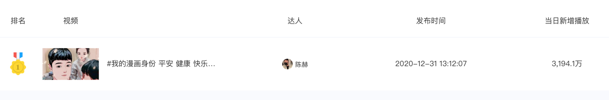
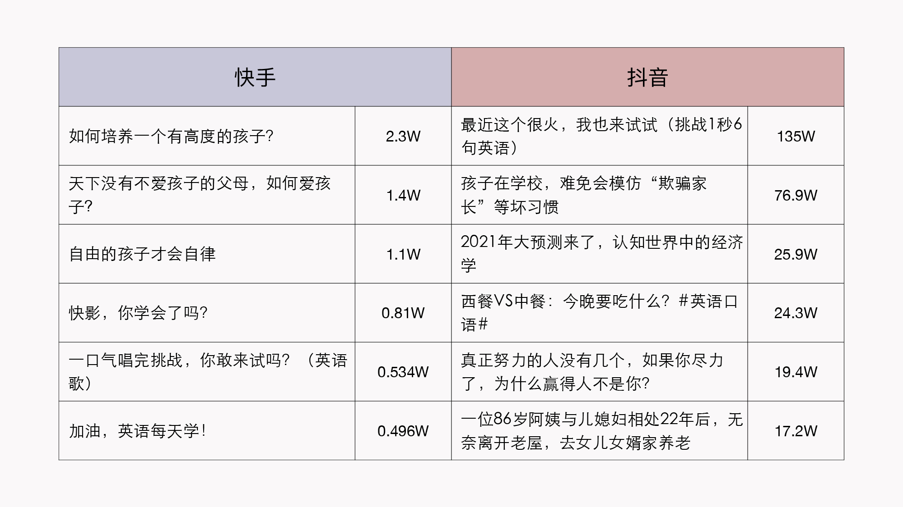
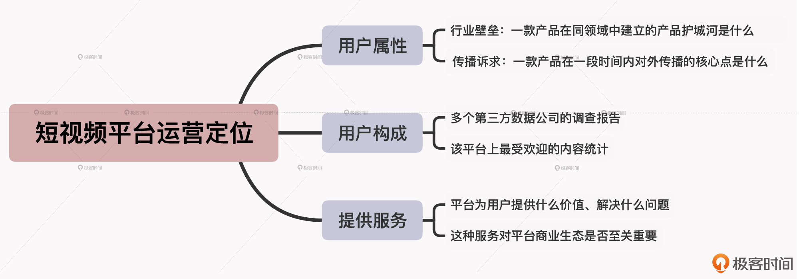

- 00 开篇词 短视频时代下，怎么把握好变现风口？.md.html
- 01 爆款短视频的底层逻辑：用心拍的短视频为啥没人看？.md.html
- 02 爆款短视频的底层逻辑：如何轻松打造自我特色？.md.html
- 03 精益创业法：如何快速跨过从0到1这道坎？.md.html
- 04 SWOT法：这么明显的个人优势你为啥就是看不到？.md.html
- 05 效用函数法：如何用量化的方式进行高效创作？.md.html
- 06 二次创新实验法：如何打造个人的差异化定位？.md.html
- 07 平台定位：如何选择最适合自己的创作平台？.md.html
- 08 如何快速找到各大短视频平台的正确切入点？.md.html
- 09 选题（上）：如何利用思考清单找到合适选题？.md.html
- 10 选题（下）：如何为不同的内容定制合适选题？.md.html
- 11 优劣分析法：如何快速筛选适合创作的视频素材？.md.html
- 12 标题（上）：如何利用微创新巧妙找到爆款标题？.md.html
- 13 标题（下）：如何用对号入座的方式抓住标题亮点？.md.html
- 14 视频封面（上）：如何快速抓住用户注意力？.md.html
- 15 视频封面（下）：如何传递最有价值的信息？.md.html
- 16 视频剪辑：如何轻松掌握视频化剪辑的三大公式？.md.html
- 17 效果反馈法：剪辑很容易，为什么你却一直学不会？.md.html
- 18 剪辑对比（上）：如何避开常见的短视频剪辑陷阱？.md.html
- 19 剪辑对比（下）：如何利用剪辑技巧提升视频质量？.md.html
- 20 拉片法：用电影创作的方式学习爆款短视频运营技巧.md.html
- 21 用户留存率：为什么粉丝很多但忠实拥趸却很少？.md.html
- 22 点赞率（上）：如何有效提升短视频的点赞量？.md.html
- 23 点赞率（下）：三种方法轻松提升用户对内容的认可度.md.html
- 24 上瘾机制：为什么视频观看量很高却没人留言？.md.html
- 25 避坑指南：为什么很多短视频账号中途做不下去了？.md.html
- 26 如何找到适合自己的短视频变现模式？.md.html
- 27 多元化变现：如何明确不同创作阶段的变现任务？.md.html
- 28 多内容变现：不同内容的主打变现模式是什么？.md.html
- 结束语 一切成大事者，都是终身学习者.md.html
- 捐赠
07 平台定位：如何选择最适合自己的创作平台？
你好，我是周维。
在前面的课程中，我们学习了短视频创作的自我定位法，这是为了更准确地看清自己，而今天要学习的平台运营定位，则是为了更准确地看清产品。只有两者有效统一，我们才能打造出适合自己的爆款短视频。
为什么这么说呢？我先给你讲个真实的故事。
之前我在线下培训的时候，遇到了一个女生，她想入局短视频，不过她之前完全没有接触过，对自己的风格和平台的了解都不够多。我先问了她想做什么方面的内容，她说想做房地产方面的知识分享。又问她想去哪个平台，她说想去抖音。而至于为什么，她的回答是：我看别人都是这样干的，好像也都火了。
如果是你，你听完她的想法会有什么感受呢？我说实话，我当时脑海里就飘过四个大字“能火才怪”。
这个道理很简单，因为适合别人的未必就适合自己。抖音的特色定位是以优质内容为先的，而且发展到现在，平台上已经囊括了众多非常专业的创作人和团队，那么这样对于一个没有任何创作基础的小白来说，如果不清楚其定位，不管她要做什么内容，都会增加创作的难度，抬高入局的门槛。
所以说，对于短视频创作者而言，了解各个短视频平台的运营定位是非常重要的，它最直接的作用就是可以让我们少走弯路、少踩坑。毕竟现在的短视频平台不止一个，你怎么知道哪个平台更适合自己的使用习惯？怎么知道哪个平台适合自己专心去深耕创作呢？
那么既然如此，我们又该如何理解短视频平台的运营定位呢？
别着急，接下来我就通过分析快手、抖音这两个平台的共性与差异，带你识别短视频平台运营定位的三大维度，让你从中掌握快速确定一个平台运营定位的方法。
这里我还想说明的是，之所以选择快手与抖音这两个平台，主要是因为这两个平台起步早、发展快，比较具有代表性，通过分析这两个平台的定位侧重点，你能更清晰地看到不同短视频平台背后运营定位的区别。
好，下面我们就一起来看看，如今非常热门的两大短视频创作平台的定位和玩法都是怎么样的吧。
两大热门平台的定位侧重点
我们应该都很熟悉快手和抖音，对二者的视频风格多少也有点了解，比如大部分人都会觉得快手的视频更接地气，而抖音更注重切合音乐的节奏等等。
但实质上，导致它们不同风格的原因是运营定位上的差异。我们先来看看快手。
快手：去中心化+以人为先
我们都知道，快手的Slogan是“拥抱每一种生活”，也就是说，每一个普通人都可以通过快手创作短视频，以自己或独特、或日常的生活方式吸引用户的关注和喜爱。
比如说，以创造“奇形怪状”的工具产品出名的“手工耿”，他只是从自己的个人兴趣出发，去创造属于个人印记的内容，就获得了大量喜爱自己的用户；来自农村的“本亮大叔”，只是一个唱歌的爱好者，在乡间地头的深情演唱也获得了很多用户的点赞。
发现这其中的共性了吗？其实简单来说，快手是通过展示每一个普通用户独一无二的人生经历，去让用户发现大千世界多种多样的生活模式，然后通过短视频内容缔结用户与用户之间的亲密关系。
那快手是怎么做到的呢？这就要说到快手的内容推荐形式了，也就是去中心化。快手会通过AI算法等技术手段，通过去中心化的方式，将短视频分发给相应的用户群体，而不会大力、集中地去推荐更多“命题式”创作的内容。这样一来，每一个创作者都可以得到同样的注意力，继而可以打造属于创作者自己的社交生态。
我们再来看看抖音。
抖音：中心化+以内容为重
在抖音上，很多的爆款内容其实都是围绕平台热点来进行的。也就是说，抖音平台会根据用户关注内容的热度来确定创作命题，或者是推出热榜，用户围绕官方推荐的话题进行创作，以此进一步提升相关内容的关注度，从而打造出一个又一个的爆款视频内容。
比如说，我们都知道抖音上聚集了很多的演艺明星，比如陈赫，他的创作内容有时候就会成为其他用户一起参与创作的热点。
下面给出的是卡思数据（第三方短视频数据平台）上针对每天最受欢迎内容的统计数据，可以看到陈赫发起的以“我的漫画身份”为主题创作的视频内容，在这段时间内成为了平台排名第一的热榜内容。

此外，创作者围绕平台上特定的主题、背景音乐、特效等方式进行创作，也会得到平台更多的推荐量。
所以，抖音上会更加注重精致的内容。不管是产品设计也好、算法推荐也罢，抖音都是以中心化的方式，利用强运营模式作为传播的突破口，促使大众为了创作热点内容蜂拥而至。
那么由此，我们其实就能体会出两大平台的定位侧重点了。快手重视的是个体价值，其用户群体涵盖了不同年龄段、不同行业，目的是以内容搭建起用户之间的关系链，以此形成强粘性的社区氛围；而抖音重视的是内容价值，其用户群体虽然与快手的重合度越来越高，但他们的需求更多是为了“集体的狂欢”，而非单纯展示自己。
三大维度分析短视频平台的运营定位
说到这里，你可能会觉得我还在卖关子：我前面提到的识别短视频平台运营定位的三个维度究竟是什么呢？
别着急，其实在分析快手、抖音这两个平台的共性与差异时，我就已经告诉了你具体的答案。接下来我们就一起看看这三个维度具体是如何使用的。
产品属性
首先，在我看来，产品属性就是指一款产品在不同领域的差异性集合。也就是产品在每个属性领域里所体现出来的性质，以及在产品运作的过程中所起的不同作用、不同地位、不同权重。
可以说，最后呈现在消费者眼前的产品，就是这些不同属性交互作用的结果。
给你举个简单的例子。前面我们在分析快手和抖音的定位时，就提到过快手看重的是个体价值，而抖音更看重优质内容的价值，这其实就是指二者在产品属性上的不同。
实际上，决定产品属性的因素有很多，比如需求因素、消费者特性、市场竞争、价格档次，等等。不过要按照这个标准去区分不同产品的产品属性的话，就有些繁琐、冗余了，这里我给你提供两种最直接有效的思路：
- 行业壁垒：一款产品在同领域中建立的产品护城河是什么
了解一个产品的行业壁垒，目的是为了看出产品立足市场的优势，也就是它最大的特点，这个特点是区别与其他产品的地方。只有建立起产品独特的壁垒，才能让自己在这个行业内具备较强的竞争力。这样，当你带着行业壁垒的视角去观察一个平台时，就会像拨开云雾一样看到隐藏在表象之后的产品真相。
还拿快手、抖音来说吧。快手的壁垒就是用户大数据的平台推荐算法，以此构建人与人的社区生态；而抖音的壁垒是强运营、重传播的内容分发模式，以此积累一个高赞的精品内容池，对可能感兴趣的用户进行持续轰炸。
所以，当你知道了一款产品的行业壁垒时，其实也就清楚了该产品的最大特色，如果想要进入一个平台，那你就要以核心特色作为切入口。
我再给你举个例子。微信视频号的壁垒就是自身已经成熟的社交生态，它为减少微信用户流失、巩固微信生态起到了防御与不可或缺的作用。换言之，视频号的产品特色都是围绕微信本身而生的。
比如，当你选择了微信视频号作为创作首选平台，那么你应该清楚自己创作的内容应该围绕熟人社交领域作为出发点，围绕这些人在乐于分享、转发的视频内容为考量标准，才更容易获得创作上的成功。
- 传播诉求：一款产品在一段时间内对外传播的核心点是什么
这个主要包括围绕什么样的用户、带来什么样的价值与服务等等，通过分析产品的传播诉求可以让我们看透一个产品的本质。
比如，抖音最早期是依靠音乐+短视频的方式作为产品主打，面对的是年轻用户，所以它对外的Slogan是“让崇拜从这里开始”。之后，随着用户数量的增加以及平台发展策略的改变，抖音对外的Slogan变为“记录美好生活”，产品的方方面面都是围绕如何让更多领域的用户在抖音上拍摄视频。
你看，单单只从一个传播的诉求上，就可以清晰判断出产品的主打属性以及接下来转型的重点了。
好，下面我们再来看看分析平台运营定位的第二个维度：用户构成。
用户构成
实际上，不管是在哪个短视频平台上创作，了解平台的用户构成都是非常关键的，因为这可以让我们知道采用什么样的方式去讲述内容。
我举个例子，假设某个平台上的用户大多都是接地气的普通人，那如果你非要拍摄看不透的冷门文艺内容，就显然是完全走错了路。
同样地，我这里要告诉你一句非常重要的话，因为后面你会反复听到我说这句话，不是我啰嗦，而是我们在创作时经常会忘记这条创作格言，我建议你把这句话写在自己能经常看到的地方。这句话是：我们不是为了自己创作，而是为了得到用户的喜爱创作。
你的脑海中是不是马上浮现一个问号：不对吧，做短视频不是经常说要做真实的自己吗？为了取悦用户的喜爱，不是没了自己的个性特点吗？
其实这完全是两码事，你千万不要放在一个框子里。为啥呢？我给你讲个故事。
我平常给一些接受能力差、文化水平不是很高的同学讲课时，我不会去讲那些枯燥无味的理论或者特别生疏的概念，因为我知道他们听不懂，也学不会。我会用他们能够理解与明白的语言、案例或者故事去告诉他们。那么，你说我这样的方式是让我失去了个性与真实吗？没有吧，这样反而更赢得了他们的喜爱。
所以说，我们看问题时，要放在具体环境中去分析，这才是最科学的解决方式。
好，回过头来，我们继续讨论短视频平台的用户构成。其实前面我们在分析快手和抖音的时候，也提到过两家平台的用户有什么不同。
早期，快手的用户群体集中以三四线的下沉用户最多，而抖音则是以一二线城市用户居多。但是随着平台的发展壮大，两个平台的用户重合度越来越高，对外也都说自己覆盖的用户面最广，那这样我们要如何判断呢？
其实，当我们去识别一个平台的用户构成时，只需要从两方面入手就可以一目了然了：
- 多个第三方数据公司的调查报告
第三方数据公司的调查报告，会为了保证用户数据的真实性，从客观中立的角度去总结、统计一个平台在某个时间的数据表现，包括用户数量的增减统计、用户画像分析等。
这里你要注意，一定记得要多看几家数据公司的报告，比如Trustdata、QuestMobile、艾瑞咨询等，毕竟获得的资料越多，对平台用户构成的了解就越全面、越真实。
- 该平台上最受欢迎的内容统计
最受欢迎的内容背后其实就是最真实的用户构成。比方说，某个平台对外声称自己的用户覆盖了一二三线城市，但是通过内容统计发现，该平台的大部分内容更多是三四线用户感兴趣的，这就说明平台的用户主力军不是一二线城市。
还有，随着平台的发展，内容类型也会产生变化，我们通过观察平台上受欢迎的内容，也可以动态统计出某个阶段该平台真实用户的构成。
具体的做法就是先设定好内容的类别，比如美食类、搞笑类、知识类、新闻类、个人记录等等，选取之后去翻阅这个平台上7日以内每个内容的代表作，然后以播放量、点赞数、评论量、转发分享量等维度进行统计分析。相信我，你会找到你想要的答案。
这里我们就以教育类的内容为例，以7天之内（截止2021年1月8日）的点赞量为维度，分别看一下抖音与快手上用户构成的细微差别是什么。

如此你就会清晰地发现，虽然二者都是短视频平台，但其背后的用户还是有些区别的。
- 共同用户：年轻用户，都喜欢学习英语。
- 差别用户：抖音的职场一族多一些，偏爱财经类知识；快手上妈妈用户居多，喜爱关注孩子的成长。抖音的下沉与中老年用户不少，喜爱情感教育；快手上的用户多是忠诚粉丝，更加关注平台剪辑工具的学习。
你看，通过简单的用户统计，是不是一下子看出了差别？这两个思路也同样适用于其他各个短视频平台。
提供服务
好，最后一个分析维度，就是要看看平台为用户提供的服务是什么了。这里你或许会产生一个疑问：这个维度意味着什么呢？
准确来说，平台提供的服务代表着平台某一段时间或者未来重点发力的方向，它可以让你清晰看到产品、平台的走向，以此将自己的创作与平台发展方向结合在一起，就能让自己在创作上少走弯路、快速成长。
什么意思呢？我还是先拿快手与抖音做例子，来详细说明一下。
现在我们已经知道，快手平台上提供的服务，就是通过去中心化的推荐机制，让更多原来淹没在精英视野中的普通人也可以通过自己的发声找到一席之地，然后通过视频内容作为自己切入社交领域的开始，去构建属于自己的生态社交圈。
也就是说，快手提供的服务是帮助创作者降低创作门槛，找到适合自己的垂直用户群体，从而充分发挥自己的优势和特色。
而对于抖音，站在创作内容的角度，你首先要考虑的是自己的差异化定位。这是由于抖音的产品属性是以精致化内容为先的，所以它提供的服务是利用自己的算法推荐，将优质的、用户喜欢看的内容传递给更多的人，形成轰动效应，并最终达到一定的峰值。
另外，虽然现在各个平台的内容趋同性越来越大，但是在抖音上会更加看重内容的独特性，它就是一个视频化信息的分发平台，可以让稀缺的内容传递得更远。
所以，当我们去判断或者识别一个短视频平台可以提供什么样的服务时，可以从以下两个角度着手：
- 平台提供的服务给用户提供了什么价值，或者说帮助用户解决了什么问题？
- 平台提供的这种服务对于自我的商业生态来说，是可有可无，还是至关重要的？
这样，按照这两条标准我们就可以轻松对号入座了。
举个例子。B站给用户提供的服务，就是满足不同垂类的用户都可以在这里找到自己感兴趣的社区。而内容是链接彼此关系的纽带，为了更好地服务用户，B站需要在视频制作上为创作者提供更好的创作环境、降低创作门槛，帮助那些善于学习、展示自己的普通人在这里找到自信，并可以将这些自信持续下去。
小结
总而言之，要想创作出好的短视频内容，首先就需要懂得选择最适合自己的创作平台，这会让你达成事半功倍的效果。
那么具体该如何选择呢？这一讲，我们共同探讨了快手与抖音平台的运营定位，通过分析两个平台的定位侧重点，总结出了识别一个短视频平台运营定位的维度模型：产品属性、用户构成以及提供的服务。
此外，每个维度还有具体的分析思路和方法，可以帮你更加准确地看透一个平台的定位。这里我也想再给你分享一下我在工作中的心得体会：
- 学习之后最大的收获是通过实践得来的
在学完这几个知识点之后，我建议你都去亲自实践一次，然后记录下来、对号入座，自己尝试提问看看寻找的答案到底是不是正确的。这样随着你多次的学习、实践之后，这个知识点也就真正被你吸收到自己的知识体系中了。
- 反直觉式思维，多看有效反馈
在短视频创作中，我见过很多创作者刚开始都非常自信，这其实是一件好事，但我个人认为自信不是凭空而来的自嗨，而是有迹可循、有能力的支撑。
今天所讲的内容，其实就是想让你在创作时多寻找一些有效反馈，如数据反馈、案例反馈等等，只有当你掌握了这种学习、做事的思维后，不管你在哪个短视频平台上创作，我敢保证你会少走很多弯路，更不会让自己轻易陷入到创作的情绪中。
按照惯例我整理了一张思维导图，帮助你回顾和复习这节课的知识点，让你能更加直观立体、更好地判断一个内容平台的运营定位。

思考题
除了快手、抖音之外，你可以讲讲其他你熟悉的短视频平台的运营定位是什么吗？
欢迎在留言区分享你的思考和见解。如果你身边的朋友也正在研究各种平台的运营定位，非常欢迎你把今天的内容分享给他，我们一起交流进步。
好了，今天我们的课就讲到这里，感谢你的阅读，我们下节课再见。
© 2019 - 2023 Liangliang Lee. Powered by gin and hexo-theme-book.